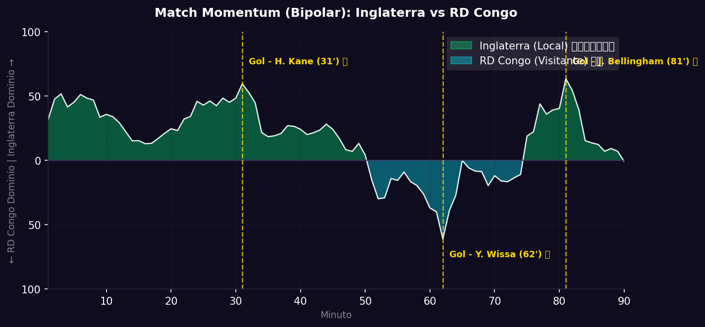

📝 Crónica y Análisis Posterior (Post-Partido)
🔮 GANADOR ACERTADO
⚽ Resumen del Partido (Resultado Real: Inglaterra 2 - 1 RD Congo)
Inglaterra avanzó con sufrimiento a los Octavos de Final al doblegar por 2-1 a una combativa selección de la República Democrática del Congo. Los ingleses dominaron el balón de inicio y se pusieron en ventaja a los 31' gracias a un certero cabezazo de Harry Kane tras un centro milimétrico de Bukayo Saka. A pesar del dominio inglés, la RD Congo sorprendió a la defensa en el minuto 62' cuando Yoane Wissa pescó un rebote en el área chica para fusilar a Pickford y poner el 1-1.
La paridad obligó a Inglaterra a volcarse en ataque con desesperación. Finalmente, en el minuto 81', Jude Bellingham frotó la lámpara e ingresó al área eludiendo a dos rivales para sacar un disparo cruzado rasante que decretó el 2-1 final y evitó la prórroga para los europeos.
🔮 Impacto en la Fase Final (Dieciseisavos) y Proyecciones
- Ajuste del Algoritmo: El algoritmo valoraba la victoria inglesa con un 68%, la cual se consumó pero con mayores dificultades de las previstas en la contención de transiciones rápidas de Wissa, revelando ciertas dudas en la zaga de centrales inglesa.
- Proyección de la Siguiente Fase (Octavos de Final): Inglaterra avanza a la siguiente ronda de Octavos de Final, donde se enfrentará en un electrizante duelo a la selección de México.
📈 Análisis del Match Momentum y Match Point (Punto Crítico)
El Match Momentum demuestra el asedio constante de Inglaterra durante la primera hora. Sin embargo, tras el gol de Wissa al 62', se observa un pico de agresividad ofensiva de la RD Congo que equilibró el trámite del encuentro. Inglaterra recuperó el dominio en el último tramo empujada por el ingreso de revulsivos.
El Match Point (Punto Crítico) del partido se situó en el minuto 81' con la genialidad individual de Jude Bellingham. Justo cuando el nerviosismo inglés crecía y la prórroga parecía inminente, el mediocampista del Real Madrid fabricó una jugada de la nada para resolver la eliminatoria.
Gráfico: Match Momentum (Intensidad de Ataque)

🇿🇦 Inglaterra: Análisis Táctico
Ventajas
- Jerarquía individual: Jugadores de élite mundial como Bellingham y Saka capaces de definir partidos trabados.
- Poderío aéreo: Kane y los centrales son una amenaza constante en jugadas de estrategia.
- Profundidad de banquillo: Variantes de calidad para cambiar la dinámica del juego.
Desventajas
- Lentitud en el repliegue defensivo: Sufren ante extremos rápidos y ataques de pocos toques.
- Momentos de pasividad posicional: Tienden a dormir el balón en zona media sin verticalidad cuando el rival se repliega muy atrás.
🇨🇦 RD Congo: Análisis Táctico
Ventajas
- Velocidad y potencia vertical: Capacidad notable para desdoblarse rápidamente tras recuperar la pelota.
- Resiliencia física: Gran fortaleza en duelos individuales divididos.
- Entusiasmo y juego directo: Capacidad para desordenar tácticamente a defensas ordenadas.
Desventajas
- Desatención defensiva en marcas: Suelen perder la referencia del delantero en centros de segunda línea.
- Falta de pausa y control: Dificultad para enfriar los partidos cuando están bajo asedio rival.
📊 Pizarras y Gráficos Tácticos
Perfil Táctico (Inglaterra)

Perfil Táctico (RD Congo)

 RD Congo
RD Congo